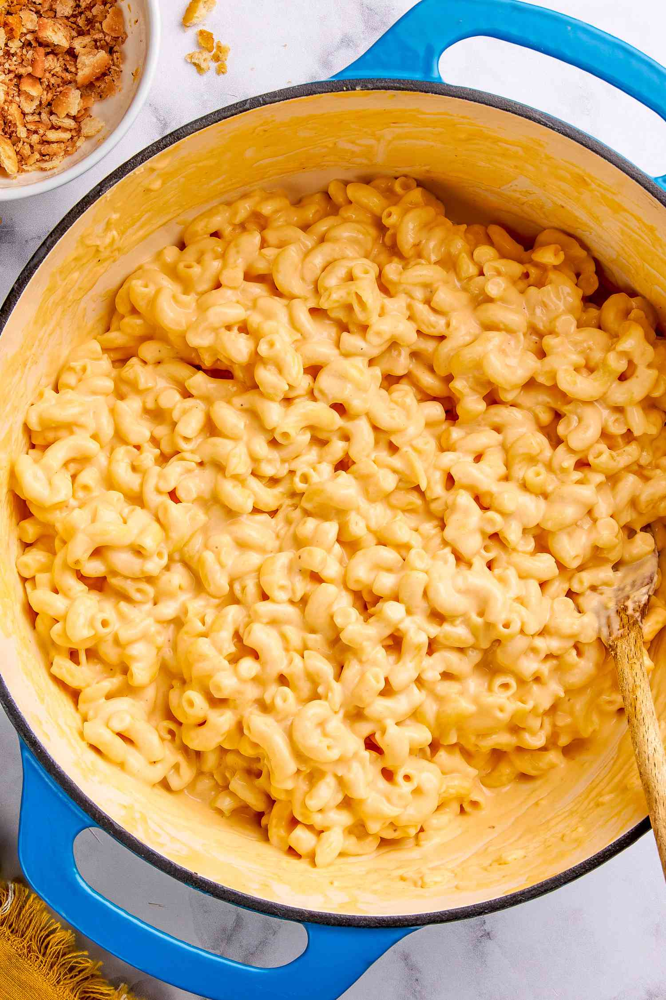

Mac and Cheese

Mac and cheese is a creamy, cheesy pasta dish made with tender macaroni coated in a rich cheese sauce. Its smooth, comforting texture makes it a favorite for all ages.
Perfect for quick meals or special occasions, mac and cheese can be customized with extra toppings like crispy breadcrumbs. Serve it hot for a warm, satisfying bite every time.
Ingredients
- Macaroni pasta
- Butter
- Flour
- Milk
- Cheddar cheese
- Salt
- Pepper
- Breadcrumbs (optional)
Steps
- Boil the macaroni pasta until tender, then drain.
- Melt butter in a pot and stir in the flour to make a roux.
- Slowly add milk, stirring until smooth and thickened.
- Add shredded cheddar cheese and stir until melted.
- Season with salt and pepper to taste.
- Mix the cooked pasta into the cheese sauce.
- Optional: Transfer to a baking dish, top with breadcrumbs, and bake until golden.
- Serve hot and enjoy.
Home